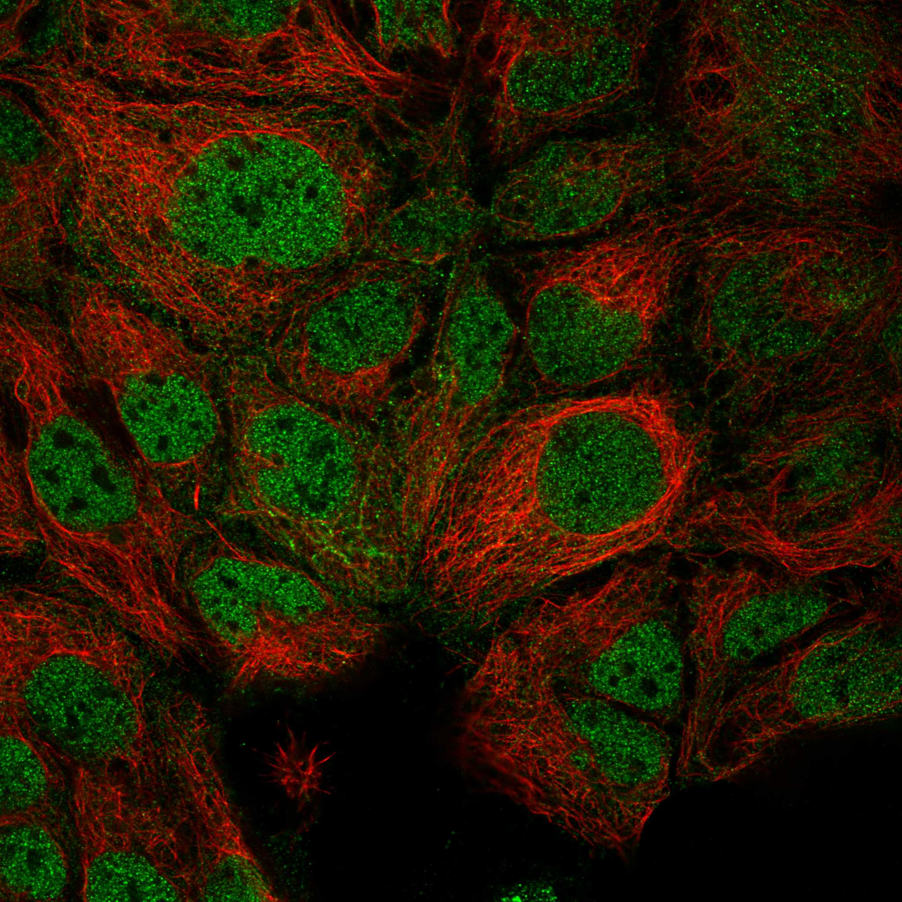
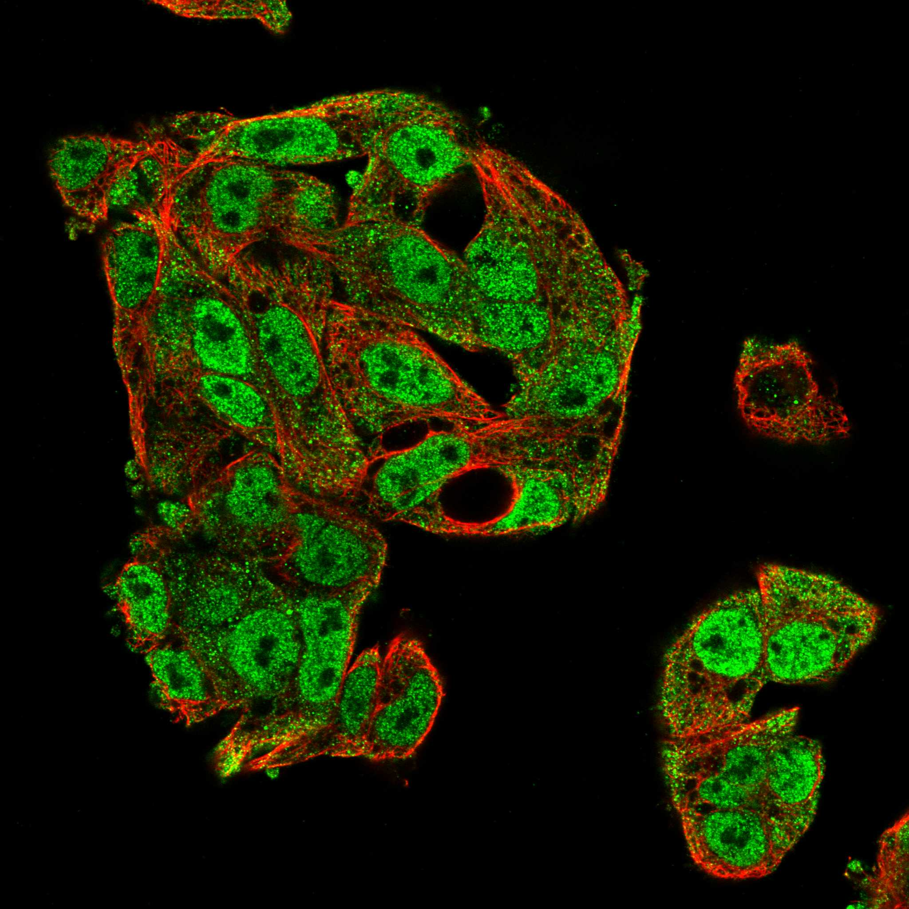
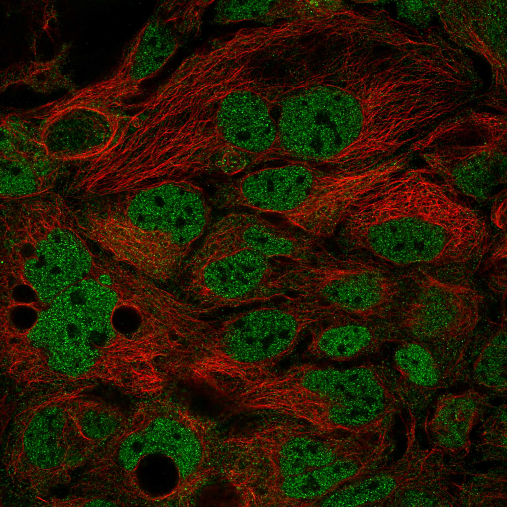
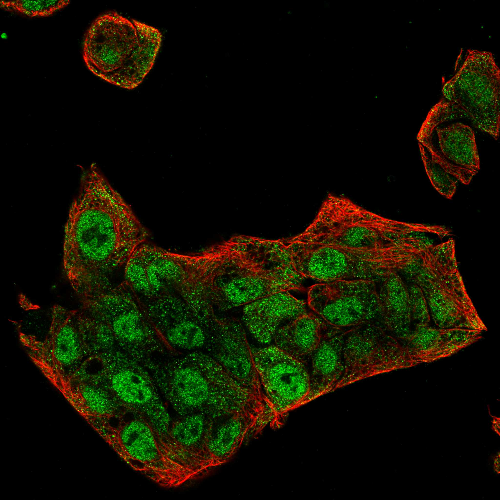
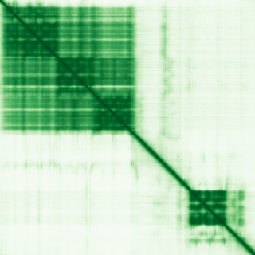

type: protein-evaluation gene: "A1CF" date: 2026-05-29 tags: [protein-scout, nuclear-protein, evaluation, ] status: scored ---
A1CF 核蛋白评估报告
1. 基本信息
| 项目 | 内容 |
|---|---|
| 基因名 / 别名 | A1CF / ACF, ACF64, ACF65, APOBEC1CF, ASP |
| 蛋白大小 | 594 aa / ~65 kDa |
| UniProt ID | Q9NQ94 (A1CF_HUMAN) |
| 评估日期 | 2026-05-28 |
IF 图像:    
2. 评分总览 (权重: 核×4 大×1 新×5 结×3 域×2 PPI×3 ÷1.83)
| 维度 | 得分 | 加权 | 加权后 | 关键证据摘要 |
|---|---|---|---|---|
| 🔴 核定位特异性 | 8/10 | ×4 | 32 | Nucleoplasm(Supported)+heterochromatin; UniProt: predominantly nuclear+ER+cytoplasm |
| 📏 蛋白大小 | 10/10 | ×1 | 10 | 594 aa / 65 kDa, 300-800理想区间 |
| 🆕 研究新颖性 | 10/10 | ×5 | 50 | PubMed 53篇; 50-200范围 |
| 🏗️ 三维结构 | 7/10 | ×3 | 21 | PDB: 2CPD(NMR,RRM3域); AF pLDDT 68.81; PDB部分验证+AF中等→7 |
| 🧬 调控结构域 | 8/10 | ×2 | 16 | 3xRRM(nucleic acid binding)+dsRBD; 多库确认 |
| 🔗 PPI | 2/10 | ×3 | 6 | IntAct:22实验互作含POGZ(chromatin)/REL(TF)/FHL2(coactivator); GO:编辑复合体; ~18%调控相关 |
| ➕ 互证加分 | — | — | +1.0 | >=3源结构域; >=2源定位 |
| 原始总分 | 136/183 | |||
| 归一化总分 | 74.3/100 |
3.6 PPI 网络（四源综合）
实验验证互作 (IntAct, physical association/direct interaction):
| Partner | 方法 | PMID | 功能类别 | 调控相关？ |
|---|---|---|---|---|
| POGZ | validated two hybrid | 32296183 | Zinc finger chromatin reader | ✅ |
| REL | two hybrid array | 25416956 | NF-kB transcription factor | ✅ |
| FHL2 | validated two hybrid | 32296183 | Transcriptional coactivator | ✅ |
| OIP5 | validated two hybrid | 32296183 | Chromosome segregation | ✅ |
| ECM1 | validated two hybrid | 32296183 | Extracellular matrix | ❌ |
| TRAF1 | validated two hybrid / two hybrid array | 32296183/25416956 | TNF signaling | ❌ |
| KRT34 | two hybrid array | 32296183 | Keratin | ❌ |
| KRT31 | validated two hybrid | 32296183 | Keratin | ❌ |
| METTL27 | two hybrid prey pooling | 32296183 | Methyltransferase-like | ❌ |
| EIF4G1 | two hybrid prey pooling | 32296183 | Translation initiation | ❌ |
| HSPB2 | two hybrid array | 32296183 | Heat shock protein | ❌ |
| ACTMAP | validated two hybrid | 32296183 | Actin maturation | ❌ |
| KLHDC7B | two hybrid prey pooling | 32296183 | Unknown | ❌ |
| DOK3 | validated two hybrid | 32296183 | Signaling adaptor | ❌ |
| SPMIP6 | validated two hybrid | 32296183 | Sperm microtubule | ❌ |
| PLEKHG4 | two hybrid array | 32296183 | RhoGEF | ❌ |
| CYSRT1 | two hybrid array | 32296183 | Keratin-associated | ❌ |
| RIMBP3 | validated two hybrid | 32296183 | RIMS binding | ❌ |
| CAVIN2 | two hybrid array | 25416956 | Caveolae | ❌ |
| ssDNA (synthetic) | pull down | 23902751 | ssDNA binding control | — |
STRING 预测互作 (combined score >0.4):
| Partner | Score | 功能类别 | 调控相关？ |
|---|---|---|---|
| APOBEC1 | 0.998 | RNA editing (C-to-U deaminase) | ❌ |
| APOB | 0.856 | Lipid transport | ❌ |
| CELF2 | 0.650 | RNA splicing factor | ❌ |
| SYNCRIP | 0.644 | RNA binding, mRNA processing | ❌ |
| HNRNPAB | 0.588 | RNA binding | ❌ |
| RBFOX2 | 0.522 | RNA splicing regulator | ❌ |
已知复合体成员 (GO Cellular Component):
- apolipoprotein B mRNA editing enzyme complex (GO:0030895)
- mRNA editing complex (GO:0045293)
- nucleoplasm, nucleus
PPI 互证分析:
- STRING + IntAct 共同确认: TRAF1（两源均验证）
- 仅 STRING 预测: APOBEC1, APOB, CELF2, SYNCRIP, HNRNPAB, RBFOX2（均为RNA代谢相关）
- 仅 IntAct 实验: POGZ, REL, FHL2, OIP5 等22个partner
- 调控相关比例: 4/22 (18.2%) — POGZ(chromatin reader), REL(TF), FHL2(coactivator), OIP5(chromosome segregation)

评价: IntAct 揭示了多个此前未记录的实验互作，其中 POGZ（含锌指结构的染色质阅读器）、REL（NF-kB 亚基转录因子）和 FHL2（转录共激活因子）具有明确的转录/染色质调控功能。OIP5 与染色体分离相关。这些实验互作暗示 A1CF 可能通过 RRM 结构域与染色质相关蛋白存在功能性联系，超出了传统认知的 RNA 编辑功能。但调控相关 partner 占比仍偏低（~18%），PPI 主体仍为 RNA 编辑/代谢蛋白。评分从 0 上调至 2（有实验调控互作但比例仍低）。
X. 关键文献 (PubMed)
1. Bernardo E et al. (2025). "HNF1A and A1CF coordinate a beta cell transcription-splicing axis that is disrupted in type 2 diabetes.". *Cell Metab*. PMID: 40774250 2. Kawaguchi M et al. (2021). "Both variants of A1CF and BAZ1B genes are associated with gout susceptibility: a replication study and meta-analysis in a Japanese population.". *Hum Cell*. PMID: 33517564 3. Nikolaou KC et al. (2019). "The RNA-Binding Protein A1CF Regulates Hepatic Fructose and Glycerol Metabolism via Alternative RNA Splicing.". *Cell Rep*. PMID: 31597092 4. Liu Y et al. (2024). "A1CF Binding to the p65 Interaction Site on NKRF Decreased IFN-β Expression and p65 Phosphorylation (Ser536) in Renal Carcinoma Cells.". *Int J Mol Sci*. PMID: 38612387 5. Hirose N et al. (2022). "Genetically-biased fertilization in APOBEC1 complementation factor (A1cf) mutant mice.". *Sci Rep*. PMID: 35948620
4. 总体评价
推荐等级: ⭐⭐⭐ (3/5)
核心优势: 1. 极其新颖：仅53篇文献，chromatin/epigenetics方向完全空白，是典型的"未被开垦的处女地" 2. heterochromatin定位：UniProt明确注释heterochromatin localization，暗示潜在chromatin association功能 3. 结构域清晰：三个RRM结构域折叠质量高（pLDDT>90），域边界明确，适合域水平的生化和结构研究
风险/不确定性: 1. **PPI- [ ] 构建RRM结构域缺失突变体，验证哪个RRM负责chromatin association
- [ ] 在TEreg相关细胞系中检测A1CF表达水平和定位
5. 数据来源
- UniProt: https://www.uniprot.org/uniprotkb/Q9NQ94
- Protein Atlas: https://www.proteinatlas.org/ENSG00000148584-A1CF
- PubMed: https://pubmed.ncbi.nlm.nih.gov/?term=A1CF%5BTitle/Abstract%5D
- STRING: https://string-db.org/network/9606.ENSP00000378868
- AlphaFold: https://alphafold.ebi.ac.uk/entry/Q9NQ94
- InterPro: https://www.ebi.ac.uk/interpro/protein/uniprot/Q9NQ94/
PPI 网络（三源综合）
| Partner | Source | Score/Evidence |
|---|---|---|
| 无记录 | — | — |
IntAct 有限记录。无 BioGrid 补充数据。
PAE 图像已获取。结构判断基于 AlphaFold pLDDT 统计。
<!-- DOMAIN_HUMANPPI_REPAIR_START -->
Domain/SMART 与 humanPPI 补充（2026-06-06）
SMART / UniProt domain
| Source | Data | |||
|---|---|---|---|---|
| UniProt | Q9NQ94 | |||
| SMART | SM00360; | |||
| UniProt Domain [FT] | DOMAIN 56..134; /note="RRM 1"; /evidence="ECO:0000255\ | PROSITE-ProRule:PRU00176"; DOMAIN 136..218; /note="RRM 2"; /evidence="ECO:0000255\ | PROSITE-ProRule:PRU00176"; DOMAIN 231..303; /note="RRM 3"; /evidence="ECO:0000255\ | PROSITE-ProRule:PRU00176" |
| InterPro | IPR044461;IPR034538;IPR006535;IPR012677;IPR035979;IPR000504; | |||
| Pfam | PF14709;PF00076; |
humanPPI / HPA Interaction
Source: https://www.proteinatlas.org/ENSG00000148584-A1CF/interaction
| Partner | Datasets | AF3/HPA structure |
|---|---|---|
| APOBEC1 | Biogrid | false |
| C9orf24 | Intact | false |
| CELF2 | Biogrid | false |
| CYSRT1 | Intact | false |
| ECM1 | Intact | false |
| FHL2 | Intact | false |
| FHL3 | Intact | false |
| HSPB2 | Intact | false |
<!-- DOMAIN_HUMANPPI_REPAIR_END -->